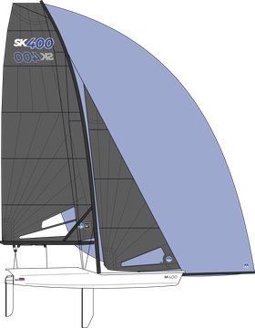
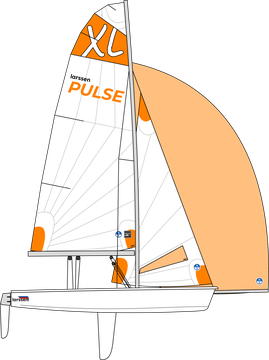
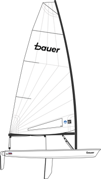
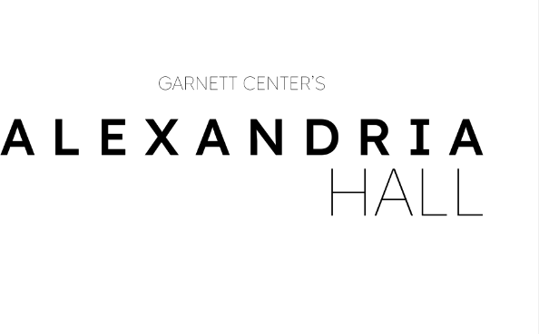

The D Line Now Ends Under the Terminal as SBX Rebuilds Its Front Door
A new transit center, a free shuttle to every concourse and a one-way Terminal Drive change how Silverbrooks gets to its airport.
By the Times Transit Desk
The rebuilt landside at Silverbrooks Thompson International. Arrows show the new one-way direction of Terminal Drive. Diagram not to scale.
For years, riders bound for Silverbrooks Thompson International stepped off the SBTrain D Line short of the terminal and wondered where the rest of the airport had gone. Starting this week, the D Line runs its last stretch under the garages and ends at the new SBX Transit Center, one escalator ride from check-in.
The center is now the single ground stop for the airport. The D Line, the SBMetro R Line, ALBExpress X4 to New Brolin, the 81 to Rutherford and the 110 SBX Flyer from Elliot Square all meet there. So does the AirLink people mover.
The SBX Airport Authority, which runs the airport separately from SBTransit, has launched the free SBX Terminal Shuttle. Buses leave the Transit Center every five minutes and circle to Concourse X (International), then A, B, C and D. “Nobody should walk a mile with a suitcase to find their gate,” an authority spokesperson said.
Drivers will notice the biggest change. Terminal Drive, the loop that wraps the terminal core, is now strictly one-way counterclockwise. Airport Pkwy is still the only road in and out: cars turn right onto the loop, keep right down the west side for the Transit Center and garages, and circle back to the parkway to leave.
The R Line and the 81 to Rutherford now follow the same loop and leave by Airport Pkwy. The R Line's old busway, which crossed the airfield, is closed for good.
The dinghy and sailmaker will add a second build shed for its SK400 skiff, Pulse XL and Bauer singlehander as junior racing programs across the state grow their fleets.
Port of Silverbrooks Posts a Record October
Container moves at the Samolette terminal topped 41,000 boxes, the port's best month since the harbor deepening.
Advertisement
Sailboats for every sailor.



Arts
Silverbrooks Ballet Opens Its Winter Season at Alexandria Hall
The company returns to Garnett Center’s Alexandria Hall on Friday with a mixed bill of three new works. Tickets start at $28.
Rutherford Public Library Extends Weekend Hours
All branches now stay open until 8 p.m. on Saturdays. Card sign-ups are free for Albanardia residents.
On the Water
Frostbite racing begins Sunday on Silverbrooks Harbor. First warning signal is 11 a.m.; the SBFerry F1 to Villas runs on its normal schedule.
Weather
54°
Breezy, with a southwest wind of 12 to 18 mph off Elliott Bay. Clearing tonight, low 41.
SBTransit Today
SBTrain A–EGood service
SBMetroGood service
SBX Terminal ShuttleEvery 5 min
ALBExpress X4Every 20 min
SBFerry F1 to VillasOn time
B
Metro & Transit
Section B · Pages 1–8
Continued from A1
At SBX, a Transit Center Built for People With Suitcases
By the Times Transit Desk
The SBX Transit Center sits inside Terminal Drive, between the short-term garages, and every train and bus that serves the airport now stops at its doors. Riders coming off the D Line climb one escalator to a single hall with ticket machines, an SBTransit service desk and the boarding area for the SBX Terminal Shuttle.
The shuttle is free and run by the SBX Airport Authority, not SBMetro, so it does not need a fare card. It circles the terminal counterclockwise with Terminal Drive traffic and stops at every concourse.
Airport officials said the loop takes about 13 minutes end to end at midday. Travelers headed to Concourse X for international flights reach it first, about five minutes after leaving the Transit Center.
Taxis and ride-hail pickups have moved to the outer curb on the east side of Terminal Drive, just past Concourse B. Drop-offs stay at the curb in front of each concourse.
Drivers leaving the airport now follow the loop all the way around before rejoining Airport Pkwy, the only road in and out. Officials asked first-time visitors to follow the overhead signs rather than their phones while the change settles in.
“Nobody should walk a mile with a suitcase to find their gate.”
SBX Terminal Shuttle stops
Stop
Serves
From Transit Center
SBX Transit Center
D Line, R Line, X4, 81, 110, AirLink
0 min
Concourse X
International arrivals and departures
5 min
Concourse A
Gates A1–A22
7 min
Concourse B
Gates B1–B24, taxis
9 min
Concourse C
Gates C1–C18
11 min
Concourse D
Gates D1–D16
13 min
C
Business & the Port
Section C · Pages 1–6
Manufacturing
Larssen Sailing Bets on Juniors With a Second Build Shed
By the Times Business Desk
From left: the SK400 skiff, the Pulse XL and the Bauer singlehander, the three boats Larssen will build in the new shed.
Larssen Sailing will open a second build shed at its Silverbrooks yard next spring, roughly doubling how many boats the company can turn out each year. The firm makes both hulls and sails; its “Sails by Larssen” tag appears on boats across the harbor.
Company officials said demand comes mostly from junior and high school programs, which have added fleets as more schools join interscholastic racing. The Bauer, a singlehander built for teenagers, has a waiting list into next summer.
The expansion adds about 40 jobs, most of them in lamination and rigging. Larssen also plans an apprenticeship with the Silverbrooks Public Schools career program.
Kwáani Adds a Second Daily Nonstop
Kwáani Airlines will fly twice a day from SBX starting in December, with the evening departure timed for connections across the islands.
MC Performance Yachts Launches the MC42
The Silverbrooks builder showed its new 42-foot racer at the boat show. The first hull goes to a buyer racing the Atlan Cup.
Nysel Boatworks Hiring Riggers
The boatyard is adding a night shift to keep up with fall haul-outs. Applications are open through November 20.
D
Sports
Section D · Pages 1–8
Hockey
Voyageurs Win a Shootout at AmEx Garden
By the Times Sports Desk
The SB Voyageurs needed six shooters to finish off a 3–2 win Sunday night at AmEx Garden, their fourth straight home win. The building, which the Voyageurs share with the SB Gales, was sold out for the second weekend in a row.
The Voyageurs play two more at home this week before a four-game road trip. Fans coming from the suburbs can take SBTrain to Elliot Square; the arena is a short walk from the station.
The SB Gales open their basketball home schedule at AmEx Garden on Thursday, so crews will flip the floor from ice to hardwood for the second time this month.
Fourth straight home win for the Voyageurs.
Admirals Hold On at BECU Stadium
The SB Admirals beat their division rival 24–20 on Sunday after a goal-line stand in the final minute. Étoile SB plays its playoff opener at the same stadium on Saturday.
Dockers Name a New Manager
The SB Dockers will introduce their new manager at jetBlue Park on Thursday. Spring training tickets go on sale in January.
E
Arts
Section E · Pages 1–6
Dance
Silverbrooks Ballet Returns to Alexandria Hall With Three New Works
By the Times Arts Desk

The company opens Friday at Garnett Center's Alexandria Hall.
Silverbrooks Ballet opens its winter season Friday at Garnett Center's Alexandria Hall with a mixed bill: two premieres by company dancers and a revival of a harbor-themed piece first danced in the hall's opening year.
The hall's two smaller rooms, the Pacific Airways Entrium and the Kramig Entrium, will host free pre-show talks an hour before each performance.
Tickets start at $28. Students with a school ID get rush seats for $12 on the day of the show.
City Hall Funds Murals for Three SBTrain Stations
The City of Silverbrooks arts fund will pay local artists to paint the mezzanines at Elliot Square, Ferry Terminal and the new SBX Airport station. Proposals are due January 15.
F
On the Water
Section F · Pages 1–4
Racing
Frostbite Season Starts Sunday on Silverbrooks Harbor
By the Times Waterfront Desk
The winter frostbite series begins Sunday, with the first warning signal at 11 a.m. off the harbor breakwater. Race officials expect ILCAs, Club 420s and a growing fleet of Larssen Bauers on the line.
Racers should expect a southwest breeze of 12 to 18 knots and water near 52 degrees. Organizers require drysuits or wetsuits for every sailor through March.
SBFerry boats keep their normal schedule during racing. Race committee boats will hold starts while a ferry crosses the course, and skippers must give ferries right of way in the channel.
 Sailboats for
Sailboats for SBTrain A–E
SBTrain A–E SBMetro
SBMetro